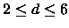
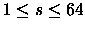
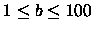
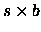

| RAID! |
RAID (Redundant Array of Inexpensive Disks) is a technique which uses multiple disks to store data. By storing the data on more than one disk, RAID is more fault tolerant than storing data on a single disk. If there is a problem with one of the disks, the system can still recover the original data provided that the remaining disks do not have corresponding problems.
One approach to RAID breaks data into blocks and stores these blocks on all
but one of the disks. The remaining
disk is used to store the parity information for the data blocks. This scheme
uses vertical parity in which bits in a
given position in data blocks are exclusive ORed to form the corresponding
parity bit. The parity block moves
between the disks, starting at the first disk, and moving to the next one
in order. For instance, if there were five
disks and 28 data blocks were stored on them, they would be arranged as
follows:
| Disk 1 | Disk 2 | Disk 3 | Disk 4 | Disk 5 |
| Parity for 1-4 | Data block 1 | Data block 2 | Data block 3 | Data block 4 |
| Data block 5 | Parity for 5-8 | Data block 6 | Data block 7 | Data block 8 |
| Data block 9 | Data block 10 | Parity for 9-12 | Data block 11 | Data block 12 |
| Data block 13 | Data block 14 | Data block 15 | Parity for 13-16 | Data block 16 |
| Data block 17 | Data block 18 | Data block 19 | Data block 20 | Parity for 17-20 |
| Parity for 21-24 | Data block 21 | Data block 22 | Data block 23 | Data block 24 |
| Data block 25 | Parity for 25-28 | Data block 26 | Data block 27 | Data block 28 |
With this arrangement of disks, a block size of two bits and even parity, the
hexadecimal sample data 6C7A79EDFC
(01101100 01111010 01111001 11101101 11111100 in binary) would be stored as:
| Disk 1 | Disk 2 | Disk 3 | Disk 4 | Disk 5 |
| 00 | 01 | 10 | 11 | 00 |
| 01 | 10 | 11 | 10 | 10 |
| 01 | 11 | 01 | 10 | 01 |
| 11 | 10 | 11 | 11 | 01 |
| 11 | 11 | 11 | 00 | 11 |
If a block becomes unavailable, its information can still be retrieved using
the information on the other disks. For
example, if the first bit of the first block of disk 3 becomes unavailable,
it can be reconstructed using the
corresponding parity and data bits from the other four disks. We know that
our sample system uses even parity:
So the missing bit must be 1.
An arrangement of disks is invalid if a parity error is detected, or if any
data block cannot be reconstructed because
two or more disks are unavailable for that block.
Write a program to report errors and recover information from RAID disks.
Each disk set has 3 parts. The first part of the disk set contains three
integers on one line: the first integer d,
,
is the number of disks, the second integer s,
,
is the
size of each block in bits, and the third
integer b,
,
is the total number of data and parity blocks on
each disk. The second part of the disk set is a
single letter on a line, either ``E'' signifying even parity or ``O''
signifying odd parity. The third part of the disk set
contains d lines, one for each disk, each holding

characters
representing the bits on the disk, with the most
significant bits first. Each bit will be specified as ``0'' or ``1'' if it holds valid data, or ``x'' if that bit is unavailable.
The end of input will be a disk set with d = 0. There will be no other data
for this set which should not be processed.
5 2 5 E 0001011111 0110111011 1011011111 1110101100 0010010111 3 2 5 E 0001111111 0111111011 xx11011111 3 5 1 O 11111 11xxx x1111 0
Disk set 1 is valid, contents are: 6C7A79EDFC Disk set 2 is invalid. Disk set 3 is valid, contents are: FFC